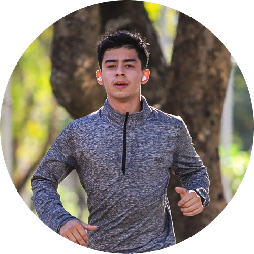

MEUS PROJETOS.
Projeto Lixeira Inteligente
Feito em C++, realizamos este trabalho para a disciplina de robótica. Foi utilizados componentes como Arduino e sensores ultrassônicos.
Acesse aquiProjeto PyGame - ZumbieSurvival
Desafiados a fazer um jogo em python na faculdade, decidi construir um jogo de sobrevivência com zumbis, onde o jogador deve sobreviver o maior tempo possível.
Acesse aquiSistema biblioteca
Trabalho feito para a faculdade, trabalhamos com a linguagem Java para criar uma biblioteca para cadastrar, listar e remover livros. Com este trabalho consegui aprender alguns conceitos dos pilares da Programação OO e os principais comandos e técnicas que utilizamos na linguagem.
Acesse aqui
UM POUCO SOBRE MIM
Tenho 20 anos e desde a adolescência sempre procurei escolher o melhor caminho para minha carreira, dessa forma, decidi construir meu futuro na área da tecnologia.
Quando encerrei meu ensino médio aos 17, decidi começar CC na Atitus, porém,
por conta de uma dúvida que eu tinha desde criança, entrei para o exército para
escolher qual caminho seguir. Lá, tive a oportunidade de trabalhar na seção de informática
por quase 2 anos e fui promovido a Cabo, nesse tempo aprendi muito sobre manutenção de computadores,
gerenciamento de redes e liderança.
Atualmente estou de volta a faculdade, onde estou aprendendo mais sobre programação e desenvolvimento de sistemas.
Experiência Profissional
TI na empresa MLTech
Atualmente trabalho como técnico em informática lidando com manutenção de computadores, notebooks, impressoras, formatação e Instalações de redes de internet em empresas.
Seção de informática do Exército Brasileiro
Em 2024 promovido a Cabo, trabalhei dentro da seção de Informática do 6ºRCB, lá adquiri conhecimento em manutenção de computadores, formatação, gerenciamento de redes, e experiência em liderar uma pequena equipe.
Estudos
Curso de Ciência da Computação
Cursando na universidade Atitus, estou no segundo semestre.